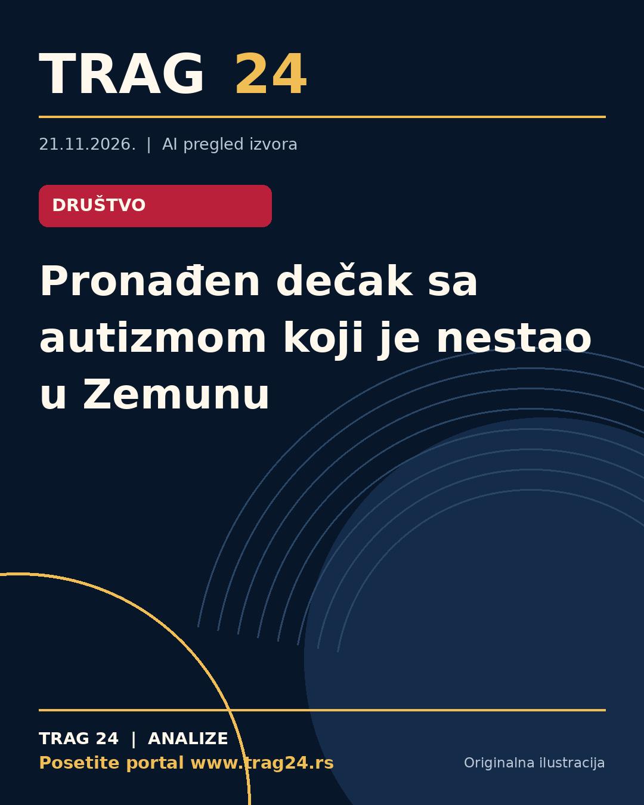

Pronađen dečak sa autizmom koji je nestao u Zemunu

ŠTA SE DOGODILO
Sedamnaestogodišnji Andrej Davidović, mladić sa autizmom i posebnim potrebama, nestao je danas oko 11.30 časova u Zemunu. Udaljio se od kuće u Bačkoj ulici i nije se vratio.
HRONOLOGIJA
Nakon nestanka, pripadnici Ministarstva unutrašnjih poslova aktivirali su sistem 'Pronađi me' za hitno obaveštavanje javnosti. Kasnije istog dana, Andrej je pronađen u autobusu na raskrsnici ulica Nemanjine i kneza Miloša u Beogradu.
ŠTA NAVODE IZVORI
Svi izvori navode da je reč o sedamnaestogodišnjem dečaku iz Zemuna koji ima autizam i ne govori. Opis njegove odeće i izgleda dat je u izveštaju kao i potvrda da je sistem 'Pronađi me' aktiviran. MUP je saopštio da je dečak pronađen bezbedno u autobusu.
ŠTA JE POTVRĐENO
Potvrđeno je da je Andrej nestao sa mesta prebivališta i da je bio u pratnji sistema hitnog obaveštavanja 'Pronađi me'. Takođe, potvrđeno je da ga je policija pronašla na navedenoj lokaciji, bezbednog i neozleđenog.
ŠTA NIJE POTVRĐENO
Nije poznato zašto je Andrej otišao od kuće niti koliko je trajalo njegovo odsustvo pre nego što je pronađen. Takođe, nema informacija o tome da li su bile uključene dodatne službe ili porodica u potragu.
ŠTA OSTАJE OTVORENO: Ostaje nejasno šta je bio motiv nestanka i kako je mladić stigao do autobusa, kao i da li će biti preduzete dodatne mere za njegovu zaštitu u budućnosti.
Izvori
- https://www.blic.rs/vesti/hronika/pronadjen-nestali-decak-andrej-davidovic-oglasio-se-mup/l0t3921
- https://www.kurir.rs/vesti/drustvo/10169039/pronadjen-decak-koji-je-nestao-u-zemunu
- https://nova.rs/vesti/drustvo/tinejdzer-sa-autizmom-nestao-u-zemunu-aktiviran-sistem-pronadji-me/
Ova analiza je pripremljena uz pomoć veštačke inteligencije na osnovu javno dostupnih izvora. Navodi izvora nisu nužno nezavisno potvrđeni.